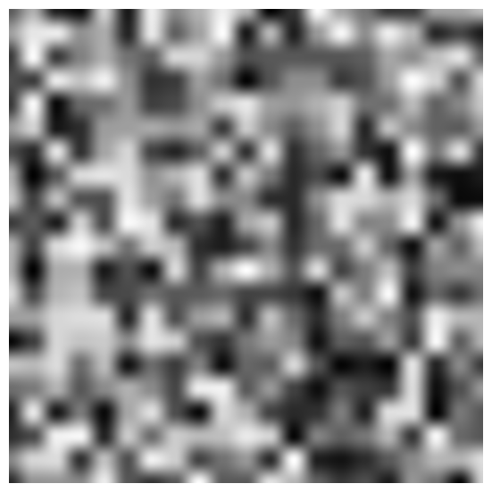
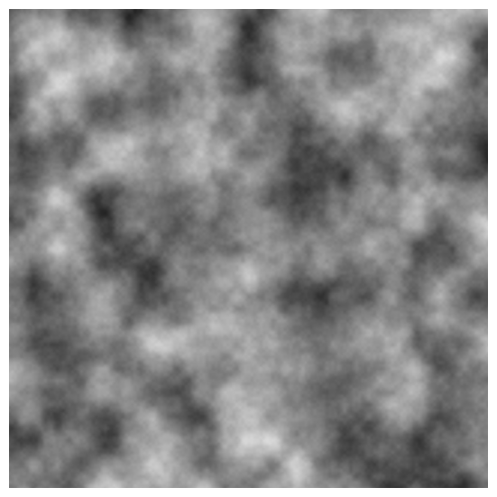
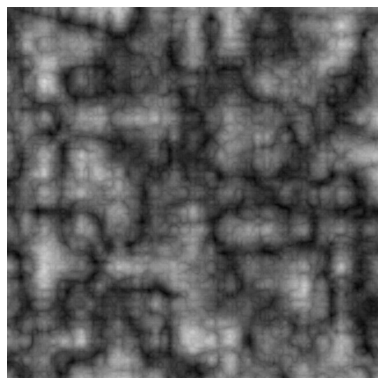
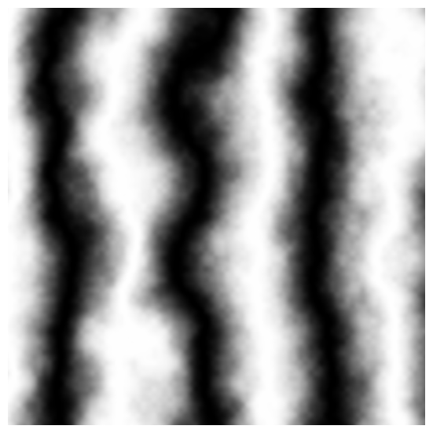
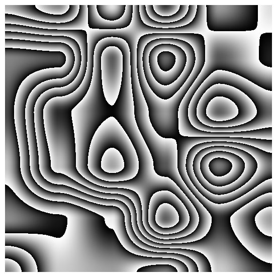

We will finish this lesson by providing you with some examples of patterns created using the noise function. When Ken Perlin originally developped his noise function, he also proposed a few simple algorithms to generate interesting solid textures using this function as a building block. Some of these functions such as the turbulence are still widely used. He described most of these patterns and a few more in a seminal paper entitled "An Image Synthetiser" which he presented at Siggraph in 1985. This paper can easily be found on the internet and we highly recommend you to read it.
As we said earlier, our version of the noise function doesn't create the most interesting looking noise (our noise look quite blocky for now). The goal of this lesson isn't to develop a good looking noise but is to understand how the technique works and the function properties. Check the second Noise Part 2 for learning about a better looking version of the noise function (called gradient noise which is the original technique proposed by Ken Perlin in 1985). However that shouldn't stop us from showing you a few examples especially with the 2D noise which we can use to start creating some more complex images. We recommend that you change the parameters in the code to understand the effect they have on the result. In each of the following chapter you will find a description of the algorithm, the resulting pattern and the code used to generate this image.
1D Noise Examples

Figure 1: the fractal sum is a sum a noises which frequency and amplitude varies from layer to layer. In this example we have 5 layers. From layer to layer we double the frequency and halve the amplitude.
One of the fist examples we will describe works well in all dimensions. But we will start with the 1D case, and give an example later with 2D noise. For a 3D noise example of this technique have a look at the second lesson. The idea behind it is to sum up the contribution of several noises (each layer is often called an octave in the CG literature but avoid this term if possible). We could vary the parameters of these various noise layers (or octaves) - for example change their frequency and amplitude - in a coherent manner. In other words, we can establish a connection between the change in frequency and amplitude from layer to layer.
- We will start from a base frequency and unit amplitude (1) and compute a first layer of noise with these values.
- Then we will add a second layer of noise but we will multiply the frequency and the amplitude of this layer by 2 and 0.5 (which is the same as dividing the amplitude by 2) respectively.
- For the third layer, we will multiply the frequency by 4 and divide the amplitude by 4. Layer 4 and 5 will have their frequency and amplitude multiplied by 8 and 16 and divided by 8 and 16 respectively.
If you haven't found the relation yet, each layer is twice the frequency and half the amplitude from the previous layer. If you build a series of noise that way and sum up together, you get the result from figure 1 (bottom image). As you can see this curve has a richer profile than a single noise. Visually it look like the profile of a mountain chain (you can see the concept of octaves or layers as adding up details of smaller frequency to the terrain - since the height of mountains is way greater than the height of rocks making up the fine detail of a landscape, it seems reasonable to decrease the amplitude of the noise layers as their frequency increases). And we are not mentioning this by mistake. As we will show later on with the 2D counterpart of this technique, we can use this result to displace a mesh and create something that looks like a mountain. Remember what we said about noise in the first chapter of this lesson. It can be used to simulate many natural shapes found in nature such as mountains or ocean waves. This is one example.
Before we look a bit more at the terminology, let's just say that in this example, the frequency and the amplitude of a particular layer is driven by a power of two. If we formalize the idea we just described in pseudo code, we can write:
One of the questions you might ask is how many layers shall I use to create this pattern. There is a technical answer that we will only briefly look into. When the frequency of the input value becomes really high, it is very likely that the result of the noise function will turn into white noise again (see the first chapter of this lesson, on noise properties). Which we want to avoid. You can sum up as many layers as you want until you reach the point where the frequency of the input value turns the result of the noise function into white noise. Which raises another question: do we know when that happens? In theory yes, we can find out when this happens. This is dictated by the rules of aliasing which is a complex and large topic. You will find an explanation about this in the lesson on aliasing and filtering (basic section) and a basic introduction to filtering noise in Noise Part 2.
That's the theory. In practice (when we use this technique for making films) we rarely use more than 3 or 5 layers (sometimes up to 7). There's a couple of reasons for that. First computing noise is costly. So the more layers you use the more time it takes to compute. The other main reason is that, the layers might not significantly contribute to the result after we have added more than 5 of 7 layers, because the amplitude of these layers at that stage becomes really small. Why shall we use more than 5 layers if more layers do not make any significant difference while still expansive to compute (unless you actually really zoom in on the noise pattern)?
Ideally you want to find a compromise between theory and practice. The perfect code would sum up layers and stop automatically when it finds that the frequency of the input value for the next layer will result in white noise (see lesson on aliasing for an example of function that cut off the number of layers before in turns into white noise). An automatic system could still lead to a very high number of layers though which can be costly. It would be good to let the user control the maximum number of layers being used with an input parameter which by default would be set with the value 3, 5 or 7.
Terminology
Some terminology now. The technique of summing up layers of noise which frequency and amplitude are related to each other, can be called a fractal sum. In fact the creation of fractal curves (or surfaces) using this technique is not limited to the field of computer graphics. You may have noticed that it looks very similar to a curve that shows the evolution of the stock market over a certain period of time. These curves and their mathematical representation were studied by Benoit Mandelbrot, a mathematician well known for his research on fractal patterns (applied to the field on finance in particular). We will limit ourselves here to the introduction of a few technical terms but readers interested by this topic can read the lesson on fractal (which is by itself a fairly large and fascinating topic). Many things from the real world, landscapes, seascapes, clouds, plants, including the evolution of the stock market, etc. have a fractal form.
When successive layers of a fractal noise have an amplitude which is inversely proportional to their frequency, the term used to describe the result is pink noise. If we formalize this in a formula we could write:
To be a bit more specific, the change of frequency and amplitude between successive layers almost forms the signature of the result noise curve. It defines its spectral properties. We use the term spectral densities to define the various frequencies (layers) the resulting noise is made of. And each one of these layers has a specific amplitude which we call power spectra. Amplitude and frequency can either be related to each other like in the case of pink noise or not. You could also have a relation in the change of frequency between successive layers. These observations are key to the creation of many patterns in computer graphics and we recommend you understand this well before reading any other lessons on pattern creation.
The use of the word noise in the name (pink noise) might be a bit misleading as it refers to a sum of noise functions with correlated frequencies and amplitudes. The term octave is also sometimes (mis-)used in place of the word layer. The term layer is more generic than octave which is also used in music. An octave is a doubling or having of a frequency. If it is used in a program (or in literature) it should mean that each successive layer in the computation of a fractal sum is twice the frequency of the previous layer. It means that the term change of rate in our equation would take the value 2. If the frequency ratio between successive layers is different than 2, the use of this term is inaccurate and layer should be used instead. When we double the frequency between layers and that the amplitude of these layers is inversely proportional to their frequency, we obtain a special type of pink noise which we call Brownian noise (named after the mathematician Robert Brown).
In computer graphics, you will often find that fractal functions are called fBm (which stands for fractional brownian motion). The CG community has borrowed most of these terms from the mathematics field, mainly as a convenient way of labelling functions which are using these techniques in a generally simplified/simpler form. In the generic form of the fBm function, the amplitude of a layer doesn't have to be inversionaly proportional to its frequency. You can use two different values to control how the frequency and the amplitude change between layers. The word lacunarity is used to control the rate by which the frequency changes from layer to layer. Lacunarity has a special meaning in in the field of fractal (check the lesson on fractals from more information). There is no special word for the rate of change in the amplitude from layer to layer. We will be using gain in the following pseudo-code of an fBm function:
Now that we have established these basic concepts for 1D noise, let's see what happens when we apply the same techniques to a 2D noise.
2D Noise Examples
To make our program easier to use we will first create a simple generic function that will will loop other all the pixels of an image and compute a 2D position from it. The pixel color is set with the result of our noise function for that point. This function is a template which takes a noise function as an argument. The noise function is where we will implement the code to compute various patterns (download the source code for a complete example).
Simple 2D Noise
Our first example is trivial. To demonstrate the use of our program and test our noise function we first output a simple noise image.
Fractal Sum

Figure 2: example of a fractal sum using 2D noise. The principle is the same as with the 1D example. Layer n + 1 has twice the frequency and half the amplitude of layer n.
Our second example is a demonstration of the fractal sum that we have already explained for the 1D case. We accumulate the contribution of five layers of noise. Between each successive layer we multiply the frequency of the point from the previous layer by two and divide the amplitude from the previous layer by two.
Here is the resulting image and the code used to compute this result (the code is already slightly optimised. We could have used the function pow(2, k) to change the frequency and the amplitude of the noise function. But this function is quite slow and we can replace it with a recursive multiplication of the frequency (2) and amplitude (0.5) parameters:

Figure 3: fractal noise can be used to generate terrain by texture displacement. It can be used for generating terrain like in this example but also water surfaces or clouds. Check the lessons on displacement and terrain generation.

Figure 4: many interesting patterns can be created by changing the values for the lacunarity and the gain.
Note that because we sum up several layers of noise, the result could be greater than 1 which will be a problem when we will convert this value to a pixel color. We can clamp the value when it is converted to a pixel color, but a better solution is to normalize the array of noise values by dividing all the values in the array by the maximum computed value. To do so, we store the maximum value as we compute all the entry in the noise map in the maxNoiseVal variable and then once all the values are computed we divide them all again by maxNoiseVal (line 12).
As mentioned before, the fractal sum can be used to create convincing terrains and many other natural patterns (seascapes, landscapes, etc.). We can easily create a 2D texture and use it to displace a mesh (figure 3). More details can be found in the lessons on texture synthesis, terrain generation and modelling of ocean surfaces.
In the code you can experiment by changing the multiplier for the frequency and the amplitude, turning your fractal noise function into a more generic fBm function which we have described earlier on.
Many different looks can be achieved by varying the value for the lacunarity and the gain as showed in figure 4.
Turbulence

Figure 5: turbulence works like the fractal sum but instead of using the noise function directly, we use the absolute value of a signed noise. In blue, the original signed noise for the first layer. Wherever the curve is negative we mirror its values about the x-axis. The resulting curves (in red, which overlaps the blue curve when the signed noise is positive) looks bumpy.
Turbulence is a function built on the same principle as the fractal sum. However instead of using the noise function directly for each layer, we will use the absolute value of the signed noise. We will first convert the result of the noise into a signed noise, and then take the absolute value of this result. As you can see in the following figure, processing the noise function that way, creates a profile that seems to be made of bumps. Wherever the curve is negative (black line) we will mirror the curve in these areas along the x axis. The red line curve is the result. Using this technique with a 2D noise can produce patterns suitable to simulate fire, smoke or clouds.
Marble Texture
A marble texture can created by modulating the phase of sine pattern with a noise function or a fractal sum. The idea here is not to use the noise function directly to create the pattern but to perturb the function we are using to create the pattern. In that case, we perturb or shift the phase of the sine function with a fractal sum. This idea can be use to introduce randomness in any periodic or regular function. Our example is quite simple and only draw a black and white marble texture. However by introducing some color in the mix, it might be possible to create more realistic patterns. The lesson on texture synthesis contains more sophisticated examples.
Wood Texture

Figure 6: the blue curve is the result of the noise multiplied by 4. The red curve is the result of the wood texture function. We subtract the blue curve from its integer part.
Like the marble texture, the wood texture relies on a very simple trick. The idea is to multiply the noise function by a certain value greater than 1. Let's call the result of this multiplication g (historically it was called g in reference to wood grain). The texture is obtained by subtracting g from its integer part. Casting a positive float number to an integer will result in an integer necessarily smaller or equal to g. The result of that subtraction is therefore necessarily in the range [0:1) (1 exclusive). Figure 6 illustrates the process. In this example, we have multiplied the noise function by 4. The blue curve represents the value g, while the red curve represents the result of subtracting g from its integer part. Multiplying the noise function by a value greater than 4 would result in more breakups in the red curve. In 2D, these breakups mark the boundary between regions of lighter and darker color (see the image below).
References
An Image Synthesizer. Ken Perlin (1985)
Texturing and Modeling, Third Edition: A Procedural Approach. David S. Ebert, F. Kenton Musgrave, Darwyn Peachey, Ken Perlin, Steve Worley (2002)
The Science of Fractal Images, Heinz-Otto Peitgen (1988)